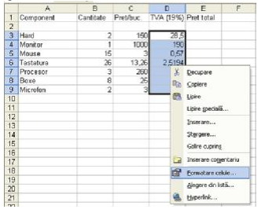
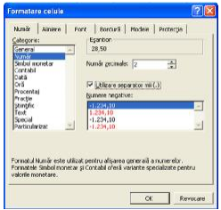
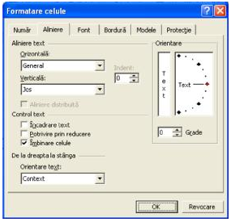
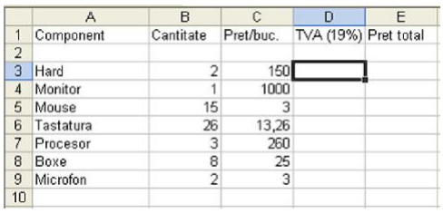
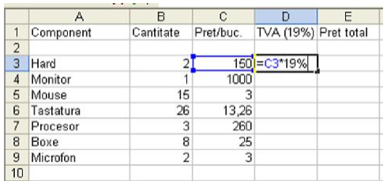
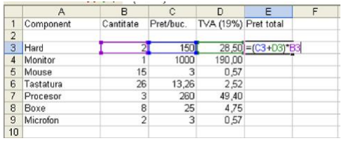
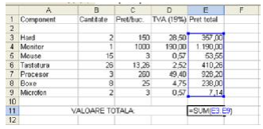

F I Ş A Nr. 10
Calcul de preţ
Deschideţi Microsoft Excel
Apăsaţi butonul
NOU
()pentru un nou spaţiu de lucru.
Redenumiţi
Foaia de lucru
făcând clic dreapta pe numele ‘Foaia1’ şi selectând REDENUMIRE. Daţi foii numele de ‘Preţul unui calculator’
Scrieţi datele în modul prezentat în figura nr. 1
Calculaţi valoarea TVA în modul prezentat în figura nr. 2
După calcularea valorii TVA pentru toate componentele selectaţi celulele D3:D9 şi daţi un clic dreapta. Va apărea următorul meniu:

Selectaţi submeniul
Formatare celule

La
Număr zecimale
introduceţi numărul 2, iar bifaţi la
Utilizare separator mii
(.)
Faceţi aceeaşi paşi şi la coloana C şi E
Acum în celula E3 introduceţi formula din figura nr. 3
Selectaţi celulele de la A11:D11
Deschideţi iarăşi submeniul Formatare celule, iar la
Aliniere
bifaţi
Îmbinare celule
.

În celula îmbinată insertaţi data ‘
VALOARE TOTALĂ:
’
În E11 insertaţi formula din figura nr. 4
După obţinerea rezultatului faceţi o diagramă de cerc (fig. 5)

Figura nr.1

Figura nr.2

Figura nr.3

Figura nr.4